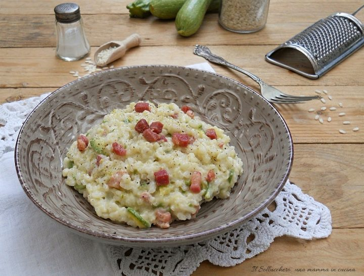

Risotto Con Zucchine e Pancetta

Description
Il risotto con zucchine e pancetta è un primo piatto saporito e cremoso ideale per una cena in famiglia o tra amici, è un piatto econonico e semplice da fare.
Ingredienti
- 320 gr riso
- 1 kg cime di rapa
- 1 cipolla
- 1 carota
- 1 gambo di sedano
- olio extravergine d'oliva
- 1/2 bicchiere vino bianco
- 1 lt brodo vegetale
- q.b sale
- q.b pepe
- 20 gr burro
- formaggio parmigiano
Steps
- Pulite le cime di rapa
- Tritare la cipolla, la carota, il gambo di sedano
- Appassire il trito di verdure, tostare il riso
- eccetera
Back to Home Page